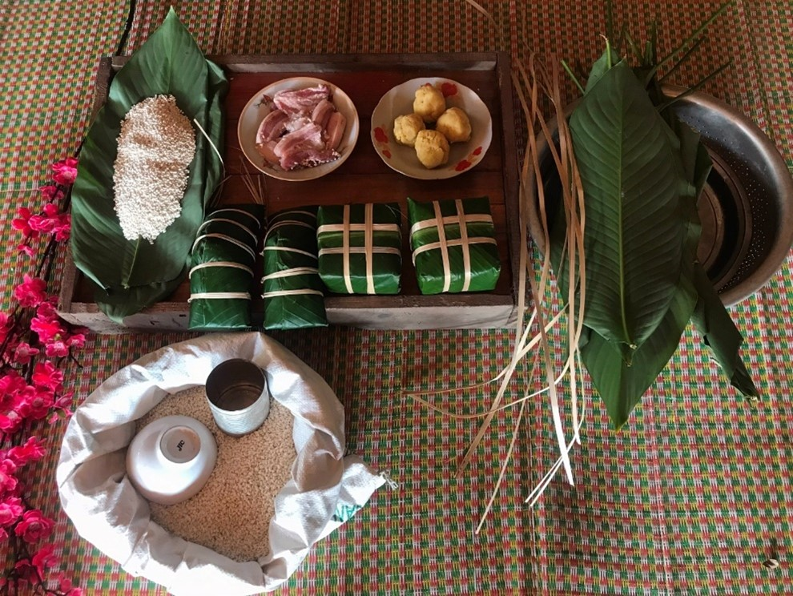
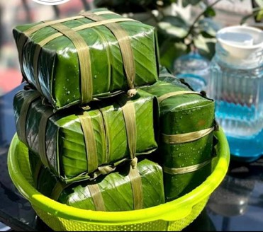
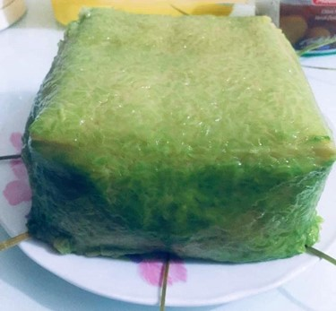
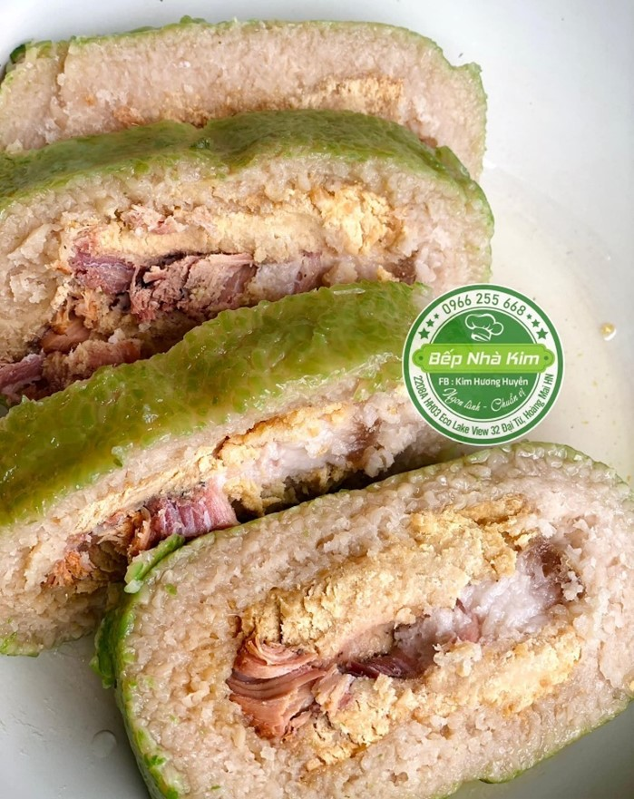
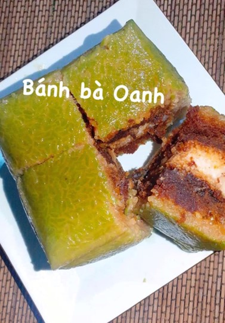

Bánh chưng
Một trong những phong tục không thể thiếu vào mỗi dịp tết đến xuân về của đồng bào đó là tục gói bánh chưng ngày tết, món bánh không chỉ có giá trị ẩm thực mà ẩn chứa trong đó là văn hoá truyền thống độc đáo của đồng bào.
Nguyên liệu để làm ra chiếc bánh chưng truyền thống là những gì tinh túy nhất của đất trời và từ những giọt mồ hôi tạo nên thành quả lao động của con người. Sau vụ mùa, các gia đình sẽ lựa những bông thóc nếp hạt tròn mẩy, bó thành chùm treo lên gác bếp dành để gói bánh chưng. Đó là những loại gạo nếp thơm ngon nhất của địa phương mình như nếp hương Xuân Trường (huyện Bảo Lạc), Nếp Ong (huyện Trùng Khánh), Nếp Pì Pất (huyện Hòa An)… Một nguyên liệu gắn liền với chiếc bánh chưng đó là những chiếc lá giong xanh dùng để gói bánh. Nhân bánh truyền thống là đỗ xanh và thịt lợn, đặc biệt một số gia đình như ở xã Nam Cao, Nam Quang huyện Bảo Lâm còn gói bánh chưng nhân cá chép.
  Ngoài bánh chưng xanh, đồng bào dân tộc miền núi Cao Bằng còn làm bánh chưng đen. Đây là một sáng tạo độc đáo, mang hương vị đặc trưng riêng của đồng bào miền núi cao. Để tạo ra bánh chưng đen, họ có nhiều cách khác nhau như lấy các bó thóc nếp đã tuốt hết thóc rồi đốt các bó rạ sạch thành tro, sàng lấy phần tro sạch trộn với gạo nếp. Còn người Tày ở Bảo Lâm, Bảo Lạc lại lấy tro từ cây muối chua, tiếng địa phương gọi là " Mạy Piệt", họ sẽ chọn cây có nhiều chùm hoa, nhiều muối, khi đốt cây muối thành than và cho vào cối nhuyễn thành bột mịn. Sau đó trộn bột than vào gạo, để 1 thời gian bột ngấm vào gạo. Ngoài ra ở một số huyện như Hà Quảng đồng bào cũng sử dụng cây ngà hoóc để đốt than đen… sau khi nhuộm đen hạt gạo, họ mới gói bánh. Những chiếc bánh sau khi luộc chín sẽ có màu đen nhánh, thơm đậm đà hương vị cây rừng và thời gian bảo quản sẽ được lâu hơn bánh chưng xanh.
Về hình dáng chiếc bánh chưng, đồng bào gói hình vuông hoặc bánh lưng gù, bánh dài. Khi gói xong, bánh được luộc kỹ từ 12-14 tiếng, sẽ rất thơm ngon, dẻo mềm.

Bánh chưng ngọt sử dụng gạo nếp, đỗ xanh, đường phên, thịt lợn nạc hơn bánh chưng thường. Bánh chưng ngọt cầu kì hơn trong khâu gói khi đường phên phải là đường ngon, được cạo mỏng từ những tảng lớn, màu nâu sậm, vị ngọt đậm.
